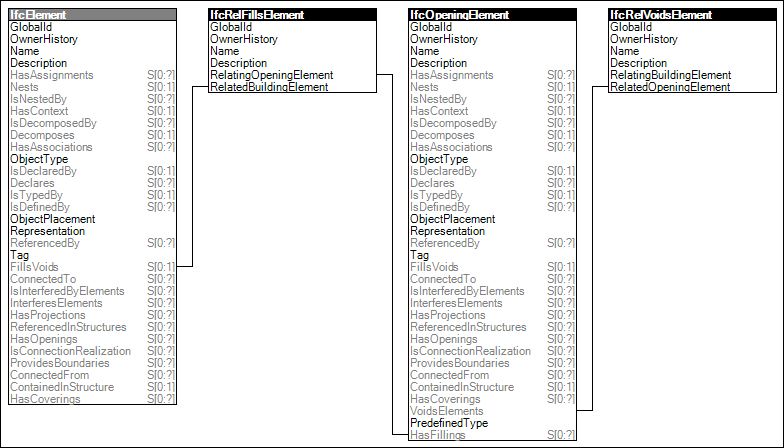

Elements such as doors and windows may be placed inside openings of walls, slabs, or other elements.
Figure 53 illustrates an instance diagram.

Figure 53 — Element Filling
Link to this page
 Link to this page
Link to this page